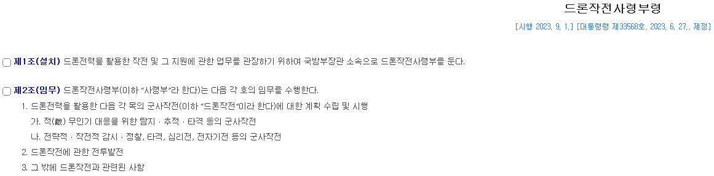
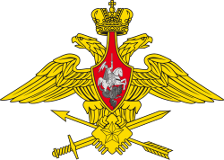
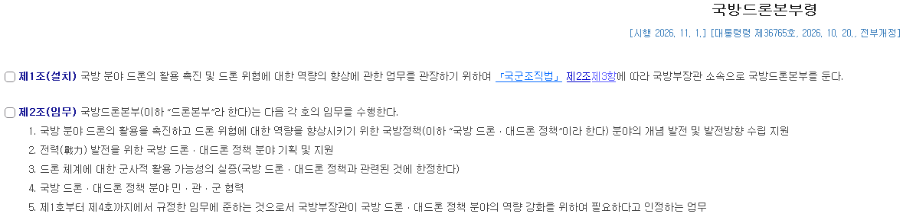

드론'작전'사령부
말 그대로 드론 전력을 활용한 모든 군사작전을 총괄하는 부대.
국군 내에 비슷한 조직으로 치자면 곤뇽 전술미사일사령부나 항공사령부 같은게 있고

러시아에서 최근 신설한 무인군과 같이 중앙집중식 드론운용을 하기 위한 지휘체계

국방드론본부는 실 작전관제가 아닌 전력획득이나 정책관리, 또는 대드론 전술 연구 등을 하는 부대.
국군으로 내에는 곤뇽 교육사나 곤운 항공우주발전단과 같은 비전투부대에 가깝고
우크라이나의 무인체계군이 드작사와 드본부 짬뽕에 가깝긴한데 러 루비콘이나 구 드작사에 비해 일선부대 작전자율성을 좀 중시하는 분위기
드론작전사령부는 예전 드론이 중앙관제형으로 (군단 사단급으로 각각 운영하던 시기) 작전을 할때나 맞지
현재 러우전등에서 보이는 소규모 부대들이 적극적으로 활용하는 현 메타에는 안 맞는다는 말이 있어왔고
그 니들이 말하고 싶어하는 이슈도 있겠지만 그냥 애초에 전술적으로 안 맞는다는 지적이 원래부터 있어왔음.
사실상 성격이 아예 다른부대인데 글 써놓은거보면 누가봐도 ㅇㄱㄸ 떡밥 못 굴려서 안달인듯 해보인다.
정사판 가라는 소리는 솔직히 하기 싫고, 그냥 남자답게 박고 승희한테 밴 먹는 모습을 보여주면 안될까?

정사판 보내라